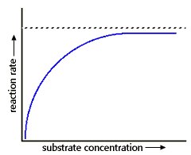

Energy, Enzymes, and Catalysis Problem Set
Problem 15 Tutorial: Interpreting the plateau of an enzyme kinetics curve
|  | In the graph reaction rate vs substrate concentration, the reason that the curve reaches a plateau, and does not increase any further at high substrate concentration is that: |
Enzyme catalyzed reactions
An enzyme catalyzed reaction may be written as:

E is the enzyme, S is the substrate, ES is the enzyme-substrate complex and P is the product.The substrate binds to a specific site on the surface of the enzyme known as the active site. The reaction occurs on the enzyme surface, after which product and enzyme are released. The enzyme can then bind another substrate.
An illustration of an enzyme-substrate complex
The enzyme lysozyme is shown with a hexose sugar bound to the active site. The substrate hexose is colored green, and it occupies the active site. The study of the rates of enzyme catalyzed reactions is called enzyme kinetics. A typical enzyme kinetics curve for a non-allosteric enzyme is shown in the graph:
An explanation for the shape of the enzyme kinetics curve
At low substrate concentration the reaction rate increases sharply with increasing substrate concentration because there abundant free enzyme available (E) to bind added substrate. At high substrate concentration, the reaction rate reaches a plateau as the enzyme active sites become saturated with substrate (ES complex), and no free enzyme to bind the added substrate.


Department of Biochemistry and Molecular Biophysics
University of Arizona
Revised: October 2004
Contact the Development Team
http://biology.arizona.edu
All contents copyright © 1996. All rights reserved.